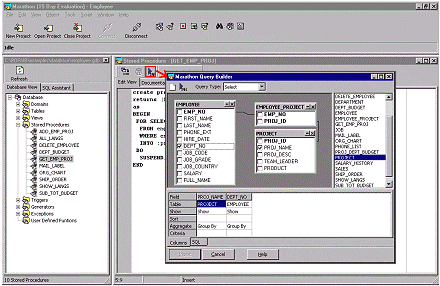
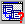
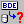
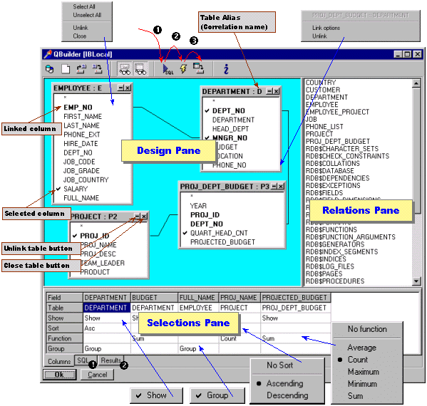
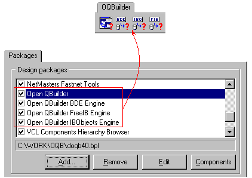

Sergey
Orlik's Open QBuilder (OQBuilder)
The Next Generation of Visual Query Creating Tools
|
Open
QBuilder and another my tools and components from my Personal
Home Page are freeware. I can't provide the technical support for
these tools, but you have all source code and you can modify it without
restriction
for any non-commercial projects. Please, let me know if you want to
use my software in your commercial projects by e-mail: sergey_orlik@geocities.com
with my tool's name in subject.
The
Open
QBuilder (OQBuilder)
is a simple "visual query builder". You can use OQBuilder in
your Borland Delphi and Borland C++Builder applications
to make easier SQL-code generation. OQBuilder
allows you to easy work with local and server databases via BDE. InterBase-developers
have an optional solution to work with InterBase
databases via IBObjects or FreeIBComponents.
Open
QBuidler is the Next Generation of QBuilder
The
Open QBuilder is the next generation of well-known QBuilder dialog-component.The
main difference between OQBuilder and QBuidler is following:
- QBuilder was
designed as a monolitic BDE-oriented component for visual query creating.
Of course, QBuilder contained all source code and
the
Marathon
(the SQL Tool for Interbase) was a good example of adopting QBuilder
to BDE-independent tools.

Picture: Adopted
version of QBuidler is a part of the Marathon - InterBase SQL Tool
- The
Open QBuilder has a new architecture.
It is designed as a non-visual VCL modal dialog component (TOQBuilder

) that works in conjunction
with a special non-visual data-access engine
component (descendants of TOQBEngine
class). TOQBuilder is data-access engine independent now. You can
use a standard TOQBEngineBDE 
component
to work with BDE-enabled data sources (via BDE and SQL Links).
InterBase
users note
- OQBuilder 4.0a
includes two additional InterBase-oriented components - TOQBEngineIBO
and TOQBEngineFIB to work with InterBase
databases via IBObjects and FreeIBComponents
respectively.
Availbale
versions of QBuilder
- Open QBuilder
4.0a for VCL 4 (Delphi 4 and C++Builder 4)

- QBuilder 4.0
for Delphi 4 and C++Builder 4
- QBuilder for
Delphi 3
All
versions of QBuilder and Open QBuilder are available as freeware with
full source code and samples.
Read the OQBuilder's
history description to know about important
bug fixes, changes and additions in the latest versions.
End-user
notes
QBuilder
provides drag'n'drop technology support to easy getting the best result:
- Drag
required database objects (tables or views) from Relations Pane to
Design Pane.
- Create
links between objects. To create link you can drag field of one object
to field of another object. Linked fields will be marked by bold font
style. To set options of link you can use link local menus (right-click
mouse).
- Select
fields (columns) for query:
a) drag'n'drop
fields of objects from Design Pane to Selections Pane
or
b) check required fields directly on the object in Design Pane - these
fields will be added to columns grid in the Selections Pane automatically.
- Specify options
to columns visibility in Selections Pane by using local menus for
cells.
- Generate SQL
code (Step 1) by click to the "Arrow" speed-button.
- Run generated
SQL-query (Step 2) by click to the "Lightning" speed-button.
- Edit SQL code
if neccessary in the SQL-editor on the "SQL" page of Selections
Pane and run edited SQL-query to get results data.
- Save results
data (Step 3) in Paradox, dBase or ASCII format by click to the "Save
Results " speed-button.

Picture: OQBuidler
is a power tool for intuitive visual query creating.
Developer
notes
After
installation design-time packages you can find OQBuilder components
on "OQBuilder" page of IDE's Component Palette.

Picture: OQBuidler's
design-time packages (Delphi 4).
OQBuilder
contains following design-time packages:
- doqb40.bpl
- TOQBuilder dialog component (Delphi 4 &
C++Builder 4)
- doqbbde40.bpl
- TOQBEngineBDE component for accessing to BDE-enabled data (Delphi
4 & C++Builder 4)
- doqbibo40.bpl
- TOQBEngineIBO component to work with InterBase via IBObjects (Delphi
4)
- doqbfib40.bpl
- TOQBEngineFIB component to work with InterBase via FreeIBComponents
(Delphi 4)
Note
for advanced developers
You
can create new TOQBEngine-descendants to work with any DataSet-oriented
sources (for example - OCI engine, ADO/OLE DB engine and etc.).
If you create your own OQBEngineXXX - contact
me to share them with Delphi and C++Builder developers community.
I will place your engines on QBuilder
web-page. Please, save the style
of your engine-component's .dcr-icons and deploy your components as
freeware with full source code. Enjoy
OQBuilder and let me know if you include it in your software.
OQBuilder
allows you to save and load query models. OQBuilder query format looks
like ".ini file" and defined (and may be customized by you)
in methods procedure TQBForm.btnSaveClick
(model saving) and procedure TQBForm.btnOpenClick
(model loading).
QBuilder
example for Delphi:
unit
DemoUnit;
interface
uses
Windows, Messages, SysUtils, Classes, Graphics, Controls,
Forms, Dialogs, Menus, StdCtrls, ExtCtrls, QBuilder,
OQBEbde;
type
TDemoForm = class(TForm)
Panel1: TPanel;
BtnQBuilder: TButton;
QBDlg: TOQBuilderDialog;
QBEngineBDE: TOQBEngineBDE;
Memo: TMemo;
procedure BtnQBuilderClick(Sender: TObject);
end;
var
DemoForm: TDemoForm;
implementation
{$R
*.DFM}
procedure
TDemoForm.BtnQBuilderClick(Sender: TObject);
begin
if QBDlg.Execute
then
Memo.Lines.Assign(QBDlg.SQL);
end;
end.
|
|
{kind=link}